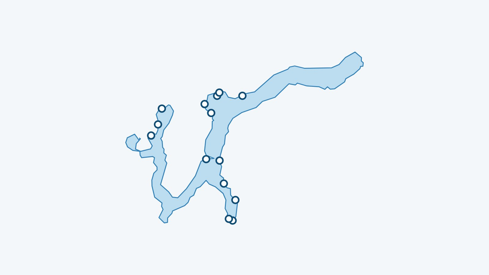

In breve
Il mio lago mostra la temperatura dell’acqua del lago di Lugano a 70 cm sotto la superficie, aggiornata ogni tre ore dal modello Alplakes dell’Eawag. Il modello è tridimensionale: il valore è letto davanti a ciascuna delle 14 spiagge seguite e può quindi variare dall’una all’altra.
Il 12 novembre 2026, al mattino, l’acqua andava da 13,8 °C a 15,1 °C secondo la spiaggia (70 cm sotto la superficie, modello Alplakes).
Da dove viene la temperatura del lago di Lugano?
I dati provengono da Alplakes, la piattaforma dell’Eawag (l’istituto di ricerca sull’acqua del settore dei politecnici federali). Combina modelli numerici dei laghi e dati satellitari per calcolare la temperatura dell’acqua a diverse profondità. I dati sono pubblicati con licenza CC BY 4.0 e Il mio lago li rilegge ogni tre ore.
Per questo lago Alplakes fa girare un modello tridimensionale. Il mio lago legge il valore a 70 cm di profondità, nel punto del modello davanti a ogni spiaggia. Per i grandi laghi l’Eawag indica un errore di circa 1 °C in superficie.
La temperatura è la stessa su tutte le spiagge?
No. Il vento sposta l’acqua di superficie e le baie poco profonde si scaldano o si raffreddano più in fretta del largo: nello stesso giorno due spiagge possono mostrare valori diversi. Lo scarto del momento è calcolato più sotto. Il meccanismo è spiegato, con esempi misurati, nel nostro articolo sulla temperatura del Lemano.
Perché 70 cm sotto la superficie?
Perché è più o meno l’acqua in cui si nuota. Il primissimo strato cambia molto in fretta con il sole e l’aria; poco più sotto il valore è più stabile e più vicino a ciò che si sente entrando.
Le 14 spiagge seguite
Ogni spiaggia ha la sua pagina, con acqua, vento e un giudizio per il bagno e il paddle.

- Caslano
- Magliaso
- Agno
- Lugano – Riva Caccia
- Paradiso – Conca d’Oro
- Lugano – Parco Ciani
- Lido di Lugano
- Castagnola – San Domenico
- Melide
- Bissone
- Maroggia
- Melano
- Capolago
- Riva San Vitale
Noleggio sul lago di Lugano
Ogni scheda rimanda al sito del gestore, quando esiste. Orari e prezzi cambiano: da confermare con lui.
- Rezzonico Boat, Lugano, vicino a Lugano – Riva Caccia: Noleggio di barche con e senza patente e di pedalò sul lago di Lugano.
- Oasis Noleggio Barche, Caslano, vicino a Caslano: Barche a noleggio con e senza patente, a Caslano e a Morcote, sul lago di Lugano.
Dove vedere la temperatura del lago di Lugano in diretta?
Nell’app Il mio lago, gratuita e senza account. L’elenco di tutte le spiagge copre anche gli altri laghi svizzeri.
L’acqua del lago di Lugano in questo momento
La temperatura dell’acqua di ogni spiaggia è nell’app Il mio lago, aggiornata ogni tre ore.